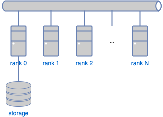

3. Installation
3.1. System requirements
ProteinDF has several distributions. If a README file is provided, first read the README file.
To execute ProteinDF, the following environment is required:
UNIX/Linux operating system
C runtime library (normally bundled with the OS)
bash
BLAS, LAPACK library
MPI runtime environment (only for parallel version)
Distributed matrix operation (ScaLAPACK) library (optional)
3.1.1. Hardware and operating system
ProteinDF has been confirmed to operate on POSIX-compliant computer systems, as well on as the following computing systems:
SGI Altix 3000 series
Cray XT-5, XT-6
The program should also work on the x86 PC Linux system.
3.1.2. Assumed computing environment and operations
3.1.3. Memory and disk
The required memory size depends on the scale of computation model. Furthermore, in parallel computation, the required memory size per node varies depending on whether one uses LAPACK or ScaLAPACK for matrix operations. For LAPACK, the maximum computation scale is equal to the memory size on each node. For ScaLAPACK, the scale is equal to the total memory size on all nodes, since the computation area is distributed and stored in all nodes. Note that this estimation serves only as a guideline, since other factors also determine the available computation scale.
Warning
For a 32bit OS, ProteinDF may have some limitations in available memory size, file size, etc.
3.1.4. Python module
Several python scripts are prepared for ProteinDF. These scripts are not necessary for program execution, but for analysis of calculation results. To use these python scripts, the following programs (modules) are required. For configuration of these programs, follow the system guidelines.
Python(above version 3.5)
argparse module
numpy module
matplotlib module
MessagePack module
YAML module
3.2. Installation and setup
The installation procedure varies according to the distributed package. If a README file is provided, follow the README file instructions.
3.2.1. Environment variables
ProteinDF requires the user to configure the following environment variables. Appropriately set the variables according to the user’s environment.
3.2.1.1. PDF_HOME
Specify the directory where the ProteinDF package was copied.
For example, when the package was copied to /usr/local/ProteinDF and when bash is used as the login shell, add the following to .bashrc:
export PDF_HOME=/usr/local/ProteinDF
3.2.1.2. OMP_NUM_THREADS
Sets the maximum number of threads in OpenMP. OpenMP must be enabled at build time.
3.2.1.3. OMP_SCHEDULE
When executing ProteinDF with the OpenMP multi-threading, specify the type and chunk size of the parallel schedule inside the OpenMP parallel region.
3.2.2. Build from the source
3.2.2.1. Executing CMake
ProteinDF uses CMake to create the Makefile. You can execute cmake by specifying the source directory in an arbitrary directory. For example, to create a build directory directly under the source directory, you can execute cmake by specifying run as follows.
$ mkdir build
$ cd build
$ cmake ..
Note
CMake automatically surveys the build environment and sets the location of the library.
The results are output when cmake is run.
If you want to save the output to a file and refer to it later,
you can use the tee command to run it as follows:
$ cmake .. 2>&1 | tee out.cmake
Here are some common variables.
Use cmake -L or cmake -LA` for more information.
--DCMAKE_INSTALL_PREFIX=PATH
Specify the installation location of the program. The default is /usr/local. This is used to install the program in the user’s home directory.
--with-blas=location
Specify the location of the BLAS library.
--with-lapack=location
Specify the location of the LAPACK library.
--with-scalapack=location
Specify the location of the ScaLAPACK library.
Environment variable CC,CXX,MPICXX
Specifies the options to pass to the C/C++ compiler. Use this variable to specify the options to the OpenMP compilers, etc.
Environment variable CFLAGS,CXXFLAGS
Specify options for C/C++ compiler. Instructions to the compiler, such as OpenMP, should be specified in this environment variable.
3.2.2.2. Executing "make"
Execute the cmake command, and make sure the Makefile is created.
Once the Makefile is created, execute the make command.
$ make 2>&1 | tee out.make
3.2.2.3. Installing the program
After executing "make", install the execution file/data to the specified path.
$ make install 2>&1 | tee out.make_install
After the execution above, the following files will be created:
${PDF_HOME}/bin/PDF.x
${PDF_HOME}/bin/PPDF.x
${PDF_HOME}/data/basis2
3.2.2.4. When trouble occurs…
In some environments, problems may occur such that no script can be executed, or no build is possible. In such cases, check the output of each script thoroughly (i.e. out.configure, out.make, and out.make_install in the case above).